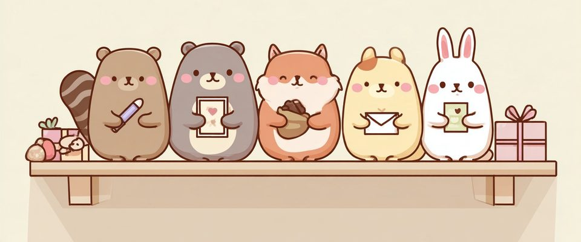
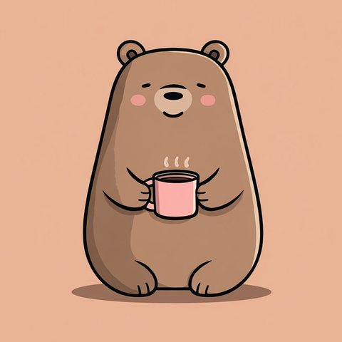
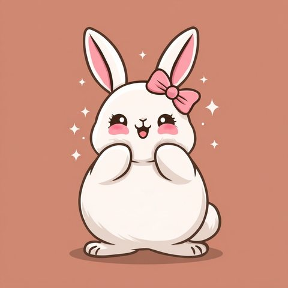

自分について10問答えるだけ。「私がもらってうれしいのは〇〇派」がわかります。結果はLINEで、恋人・家族・友達に送れます。
全10問・約1分・結果をLINEで送れる
自分の好みから、もらってうれしいプレゼントの傾向を見る遊びの診断です
-
画像を長押し(スマホ)または右クリックで保存できます
🎁 相性のいい贈り手タイプ


🔮 そのほかの診断
🐹 Desk Animalsをフォローする
相手のMBTIが分かるなら → タイプ別プレゼントガイド